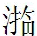

賈母一席話，隱隱照起全文，便可一直叙去，接筆却置賊不論，轉出賭錢，接筆又置賭錢不論，轉出姦證，接筆又置姦證不論，轉出討情，一波未平，一波又起，勢如怒蛇出穴，蜿蜒不就捕。
賈母一席話，隱隱照起全文，便可一直叙去，接筆却置賊不論，轉出賭錢，接筆又置賭錢不論，轉出姦證，接筆又置姦證不論，轉出討情，一波未平，一波又起，勢如怒蛇出穴，蜿蜒不就捕。
話說那趙姨娘和賈政說話，忽聽外面一聲響，不知何物。忙問時，原來是外間窗屜不曾扣好，塌了屈戌了吊下來。趙姨娘駡了丫頭幾句，自己帶領丫鬟上好，方進來打發賈政安歇。不在話下。
却說怡紅院中寶玉正纔睡下，丫鬟們正欲各散安歇，忽聽有人擊院門。老婆子開了門，見是趙姨娘房內的丫鬟名喚小鵲的。問他什麽事，小鵲不答，直往房內來找寶玉。
 奇，從未見此婢也。只見寶玉纔睡下，晴雯等猶在床邊坐著，大家頑笑，見他來了，都問：「什麽事，這時候又跑了來作什麽？」又是補出前文矣，非只(張)[此]一回也。小鵲笑向寶玉道：「我來告訴你一個信兒。方纔我們奶奶這般如此在老爺前說了。你仔細明兒老爺問你話。」說著回身就去了。襲人命留他吃茶，因怕關門，遂一直去了。
奇，從未見此婢也。只見寶玉纔睡下，晴雯等猶在床邊坐著，大家頑笑，見他來了，都問：「什麽事，這時候又跑了來作什麽？」又是補出前文矣，非只(張)[此]一回也。小鵲笑向寶玉道：「我來告訴你一個信兒。方纔我們奶奶這般如此在老爺前說了。你仔細明兒老爺問你話。」說著回身就去了。襲人命留他吃茶，因怕關門，遂一直去了。
這裡寶玉聽了，便如孫大聖聽見了緊箍咒一般，登時四肢五內一齊皆不自在起來。想來想去，別無他法，且理熟了書預備明兒盤考。口內不舛錯，便有他事，也可搪塞一半。想罷，忙披衣起來要讀書。心中又自後悔，這些日子只說不提了，偏又丟生，早知該天天好歹溫習些的。如今打算打算，肚子內現可背誦的，不過「學」、「庸」、二「論」，是帶註背得出的。至上本《孟子》，就有一半是夾生的，若憑空提一句，斷不能接背的，至「下孟」，就有一大半忘了。算起「五經」來，因近來作詩，常把《詩經》讀些，雖不甚精闡，還可塞責。 妙！寶玉讀書原係從(問)[閨]中(妙！寫寶玉讀書非為功名也。如今若溫習這個，又恐明日盤詰那個，若溫習那個，又恐盤駁這個。况一夜之功，亦不能全然溫習，因此越添了焦燥。自己讀書不致緊要，却帶累著一房丫鬟們皆不能睡。襲人、麝月、晴雯等幾個大的自不用說，在旁剪燭斟茶，那些小的，都困眼朦朧，前仰後合起來。晴雯因駡道：「什麽蹄子們，一個個黑日白夜挺屍挺不够，偶然一次睡遲了些，就裝出這腔調來了。再這樣，我拿針戳給你們兩下子！」
話猶未了，只聽外間「咕咚」一聲，急忙看時，原來是一個小丫頭子坐著打盹，一頭撞到壁上了，從夢中驚醒，恰正是晴雯說這話之時，他怔怔的只當是晴雯打了他一下，遂哭央說：「好姐姐，我再不敢了。」衆人都發起笑來。
寶玉忙勸道：「饒他去罷，原該叫他們都睡去纔是。你們也該替換著睡去。」襲人忙道：「小祖宗，你只顧你的罷。通共這一夜的工夫，你把心暫且用在這幾本書上，等過了這一關，由你再張羅別的去，也不算誤了什麽。」寶玉聽他說的懇切，只得又讀。讀了沒有幾句，麝月又斟了一杯茶來潤舌，寶玉接茶吃了。因見麝月只穿著短襖，解了裙子，寶玉道：「夜靜了，冷，到底穿一件大衣裳纔是。」麝月笑指著書道：「你暫且把我們忘了，心且略對著他些罷。」此處豈是讀書之處，又豈是伴讀之人？古今天下誤盡多少紈絝！何况又是此等時之怡紅院，此等之鬟婢，又是此等一個寶玉哉！
話猶未了，只聽金星玻璃從後房門跑進來，口內喊說：「不好了，一個人從墻上跳下來了！」衆人聽說，忙問在那裡，即喝起人來，各處尋找。晴雯因見寶玉讀書苦惱，勞費一夜神思，明日也未必妥當，心下正要替寶玉想出一個主意來脫此難，正好忽然逢此一驚，即便生計，向寶玉道：「趁這個機會快裝病，只說唬著了。」此話正中寶玉心懷，因而遂傳起上夜人等來，打著燈籠，各處搜尋，並無踪跡，都說：「小姑娘們想是睡花了眼出去，風搖的樹枝兒，錯認作人了。」晴雯便道：「別放謅屁！你們查的不嚴，怕得不是，還拿這話來支吾。纔剛並不是一個人見的，寶玉和我們出去有事，大家親見的。如今寶玉唬的顔色都變了，滿身發熱，我如今還要上房裡取安魂丸藥去。太太問起來，是要回明白的，難道依你說就罷了不成。」
衆人聽了，嚇的不敢則聲，只得又各處去找。晴雯和玻璃二人果出去要藥，故意鬧的衆人皆知寶玉嚇著了。王夫人聽了，忙命人來看視給藥，又吩咐各上夜人仔細搜查，又一面叫查二門外鄰園墻上夜的小厮們。於是園內燈籠火把，直鬧了一夜。至五更天，就傳管家男女，命仔細查一查，拷問內外上夜男女等人。
賈母聞知寶玉被嚇，細問原由。不敢再隱，只得回明。賈母道：「我必料到有此事。如今各處上夜都不小心，還是小事，只怕他們就是賊也未可知。」當下邢夫人並尤氏等都過來請安，鳳姐及李紈姊妹等皆陪侍，聽賈母如此說，都默無所答。獨探春出位笑道：「近因鳳姐姐身子不好，幾日園內的人比先放肆了許多。先前不過是大家偷著一時半刻，或夜裡坐更時，三四個人聚在一處，或擲骰或鬬牌，小小的頑意，不過為熬困。近來漸次放誕，竟開了賭局，甚至有頭家局主，或三十吊五十吊三百吊的大輸贏。半月前竟有爭鬬相打之事。」賈母聽了，忙說：「你既知道，為何不早回我們來？」探春道：「我因想著太太事多，且連日不自在，所以沒回。只告訴了大嫂子和管事的人們，誡飭過幾次，近日好些。」賈母忙道：「你姑娘家，如何知道這裡頭的利害。你自為耍錢常事，不過怕起爭端。殊不知夜間既耍錢，就保不住不吃酒，既吃酒，就免不得門戶任意開鎖。或買東西，尋張覓李，其中夜靜人稀，趨便藏賊引姦引盜，何等事作不出來。况且園內的姊妹們起居所伴者皆係丫頭媳婦們，賢愚混雜，賊盜事小，再有別事，倘略沾帶些，關係不小。這事豈可輕恕。」探春聽說，便默然歸坐。鳳姐雖未大愈，精神因此比常稍减，看他漸次寫來，從不作一筆安逸之筆，〔二〕况阿鳳之文哉。今見賈母如此說，便忙道：「偏生我又病了。」遂回頭命人速傳林之孝家的等總理家事四個媳婦到來，當著賈母申飭了一頓。賈母命即刻查了頭家賭家來，有人出首者賞，隱情不告者罰。
林之孝家的等見賈母動怒，誰敢徇私，忙至園內傳齊人，一一盤查。雖不免大家賴一回，終不免水落石出。查得大頭家三人，小頭家八人，聚賭者通共二十多人，都帶來見賈母，跪在院內磕響頭求饒。賈母先問大頭家名姓和錢之多少。原來這三個大頭家，一個就是林之孝家的兩姨親家，一個就是園內厨房內柳家媳婦之妹，一個就是迎春之乳母。這是三個為首的，餘者不能多記。
賈母便命將骰子牌一併燒毀，所有的錢入官分散與衆人，將為首者每人四十大板，攆出，總不許再入；從者每人二十大板，革去三月月錢，撥入圊厠行內。又將林之孝家的申飭了一番。林之孝家的見他的親戚又與他打嘴，自己也覺沒趣。
迎春在坐，也覺沒意思。黛玉、寶釵、探春等見迎春的乳母如此，也是物傷其類的意思，遂都起身笑向賈母討情說：「這個媽媽素日原不頑的，不知怎麽也偶然高興。求看二姐姐面上，饒他這次罷。」賈母道：「你們不知。大約這些奶子們，一個個仗著奶過哥兒姐兒，原比別人有些體面，他們就生事，比別人更可惡，專管調唆主子護短偏向。我都是經過的。况且要拿一個作法，恰好果然就遇見了一個。你們別管，我自有道理。」寶釵等聽說，只得罷了。
一時賈母歇晌，大家散出，都知賈母今日生氣，皆不敢各散回家，只得在此暫候。尤氏便往鳳姐處來閒話了一回，因他也不自在，只得往園內尋衆姑嫂閒談。邢夫人在王夫人處坐了一回，也就往園內散散心來。剛至園門前，只見賈母房內的小丫頭子名喚傻大姐的笑嘻嘻走來，手內拿著個花紅柳綠的東西，低頭一壁瞧著，一壁只管走，不防迎頭撞見邢夫人，抬頭看見，方纔站住。邢夫人因說：「這痴丫頭，又得了個什麽狗不識兒這麽歡喜？拿來我瞧瞧。」
原來這傻大姐年方十四五歲，是新挑上來的與賈母這邊提水桶掃院子專作粗活的一個丫頭。只因他生得體肥面闊，兩隻大脚，作粗活簡捷爽利，且心性愚頑，一無知識，行事出言，常在規矩之外。賈母因喜歡他爽利便捷，又喜他出言可以發笑，便起名為「呆大姐」，常悶來便引他取笑一回，毫無避忌，因此又叫他作「痴丫頭」。他縱有失禮之處，見賈母喜歡他，衆人也就不去苛責。
這丫頭也得了這個力，若賈母不喚他時，便入園內來頑耍。今日正在園內掏促織，忽在山石背後得了一個五彩綉香囊，其華麗精緻，固是可愛，但上面綉的並非花鳥等物，一面却是兩個人赤條條的盤踞相抱，一面是幾個字。這痴丫頭原不認得是春意，便心下盤算：「敢是兩個妖精打架？不然必是兩口子相打。」左右猜解不來，正要拿去與賈母看，險極，妙極！榮府堂堂詩禮之家，且大觀官園又何等嚴肅清幽之地，金閨玉閣尚有此等穢物，天下淺閨薄幕之家寧不慎乎！雖然，但此等偏出大官世族之中者，蓋因其房室香宵、鬟婢混雜，焉保其個個守禮持節哉？此正為大官世族而告誡。其淺閨薄幕之處，毋如主婢日夕耳鬢交磨，一止一動悉在耳目之中，又何必諄諄再四焉！〔三〕是以笑嘻嘻的一壁看，一壁走，忽見了邢夫人如此說，便笑道：「太太真個說的巧，真個是狗不識呢。妙！寓言也，大凡知此交媾之情者，真狗畜之識耳，非肆言惡詈凡識此事者即狗矣。然則雲與賈母看，則先駡賈母矣。此處邢夫人亦看，然則又駡邢夫人乎？故作者又難。太太請瞧一瞧。」說著，便送過去。
邢夫人接來一看，嚇得連忙死緊攥住，妙！這一「嚇」字方是寫世家夫人之筆。雖前文明書邢夫人之為人稍劣，然(不)[亦]在情理之中，若不用慎重之筆，則邢夫人直係一小家卑污極輕賤之人矣，豈得與榮府聯房哉？所謂此書針綫慎密處，全在無意中一字一句之間耳，看者細心方得。忙問：「你是那裡得的？」傻大姐道：「我掏促織兒在山石上揀的。」邢夫人道：「快休告訴一人。這不是好東西，連你也要打死。皆因你素日是傻子，以後再別提起了。」這傻大姐聽了，反嚇的黃了臉，說：「再不敢了。」磕了個頭，呆呆而去。邢夫人回頭看時，都是些女孩兒，不便遞與，自己便塞在袖內，心內十分罕異，揣摩此物從何而至，且不形於聲色，且來至迎春室中。
迎春正因他乳母獲罪，自覺無趣，心中不自在，忽報母親來了，遂接入內室。奉茶畢，邢夫人因說道：「你這麽大了，你那奶媽子行此事，你也不說說他。如今別人都好好的，偏咱們的人做出這事來，什麽意思。」「咱們」二字便見自懷異心，從上文生離異發瀝而來，謹密之至。更有人[甚]於此者，君未知也，一笑。迎春低著頭弄衣帶，半晌答道：「我說他兩次，他不聽也無法。况且他是媽媽，只有他說我的，沒有我說他的。」妙極！直畫出一個懦弱小姐來。邢夫人道：「胡說！你不好了他原該說，如今他犯了法，你就該拿出小姐的身分來。他敢不從，你就回我去纔是。如今直等外人共知，是什麽意思。我敬問：「外人」為誰？再者，只他去放頭兒，還恐怕他巧言花語的和你借貸些簪環衣履作本錢，你這心活面軟，未必不周接他些。若被他騙去，我是一個錢沒有的，看你明日怎麽過節。」迎春不語，只低頭弄衣帶。
邢夫人見他這般，因冷笑道：「總是你那好哥哥好嫂子，一對兒赫赫揚揚，璉二爺鳳奶奶，兩口子遮天蓋日，百事周到，竟通共這一個妹子，全不在意。加(在)[罪]於璉鳳，的是父母常情，極是。何必又如此說來，便見又有私意。但凡是我身上掉下來的，又有一話說——只好憑他們罷了。如何？此皆婦女私假之意，大不可者。况且你又不是我養的，更不好。你雖然不是同他一娘所生，到底是同出一父，也該彼此瞻顧些，也免別人笑話。又問：「別人」為誰？又問：彼二人雖不同母，終是同父。彼二人既同父，其父又係君之何人？籲！婦人私心，今古有之。我想天下的事也難較定，你是大老爺跟前人養的，這裡探丫頭也是二老爺跟前人養的，出身一樣。如今你娘死了，從前看來，你兩個的娘，只有你娘比如今趙姨娘强十倍的，你該比探丫頭强纔是。怎麽反不及他一半？誰知竟不然，這可不是異事！〔四〕倒是我一生無兒無女的，一生乾淨，也不能惹人笑話議論為高。」最可恨婦人無子者引此話(是)[飾]說。旁邊伺候的媳婦們便趁機道：「我們的姑娘老實仁德，那裡像他們三姑娘伶牙俐齒，會要姊妹們的强。他們明知姐姐這樣，他竟不顧恤一點兒。」殺殺殺！此輩專生離異。余因實受其蠱，今讀此文，直欲拔劍劈紙。又不知作者多少眼泪灑出此回也。又問不知如何「顧恤」些，又不知有何可「顧恤」之處，直令人不解。愚奴賤婢之言，酷肖之至！邢夫人道：「連他哥哥嫂子還如是，別人又作什麽呢。」一言未了，人回：「璉二奶奶來了。」邢夫人聽了，冷笑兩聲，命人出去說：「請他自去養病，我這裡不用他伺候。」接著又有探事的小丫頭來報說：「老太太醒了。」邢夫人方起身前邊來。迎春送至院外方回。
綉橘因說道：「如何，前兒我回姑娘，那一個攢珠累絲金鳳竟不知那裡去了。回了姑娘，姑娘竟不問一聲兒。我說必是老奶奶拿去典了銀子放頭兒的，姑娘不信，只說司棋收著呢。問司棋，司棋雖病著，心裡却明白。我去問他，他說沒有收起來，還在書架上匣內暫放著，預備八月十五日恐怕要戴呢。姑娘就該問老奶奶一聲，只是臉軟怕人惱。如今竟怕無著，明兒要都戴時，獨咱們不戴，是何意思呢。」這個「咱們」使得恰，是女兒喁喁私語，非前文之一例可比者。寫得出，批得出。
迎春道：「何用問，自然是他拿去暫時借一肩了。我只說他悄悄的拿了去，不過一日半晌，仍舊悄悄的送了來，誰知他就忘了。今日偏又鬧出來，問他想也無益。」綉橘道：「何曾是忘記！他是試準了姑娘的性格，所以纔這樣。如今我有個主意：我竟走到二奶奶房裡將此事回了他，或他著人去要，或他省事拿幾吊錢來替他賠補。如何？」寫女兒各有機變，個個不同。迎春忙道：「罷，罷，罷，省些事罷。寧可沒有了，又何必生事。」總是懦語。綉橘道：「姑娘怎麽這樣軟弱。都要省起事來，將來連姑娘還騙了去呢，我竟去的是。」說著便走。迎春便不言語，只好由他。
誰知迎春乳母子媳王住兒媳婦正因他婆婆得了罪，來求迎春去討情，聽他們正說金鳳一事，且不進去。也因素日迎春懦弱，他們都不放在心上。如今見綉橘立意去回鳳姐，估著這事脫不去的，且又有求迎春之事，只得進來，陪笑先向綉橘說：「姑娘，你別去生事。姑娘的金絲鳳，原是我們老奶奶老糊塗了，輸了幾個錢，沒的撈梢，所以暫借了去。原說一日半晌就贖的，因總未撈過本兒來，就遲住了。可巧今兒又不知是誰走了風聲，弄出事來。雖然這樣，到底主子的東西，我們不敢遲誤下，終久是要贖的。如今還要求姑娘看從小兒吃奶的情常，往老太太那邊去討個情面，救出他老人家來纔好。」迎春先便說道：「好嫂子，你趁早兒打了這妄想，要等我去說情兒，等到明年也不中用的。方纔連寶姐姐林妹妹大夥兒說情，老太太還不依，何况是我一個人。我自己愧還愧不來，反去討臊去。」綉橘便說：「贖金鳳是一件事，說情是一件事，別絞在一處說。難道姑娘不去說情，你就不贖了不成？嫂子且取了金鳳來再說。」
王住兒家的聽見迎春如此拒絕他，綉橘的話又鋒利無可回答，一時臉上過不去，也明欺迎春素日好性兒，乃向綉橘發話道：「姑娘，你別太仗勢了。你滿家子算一算，誰的媽媽奶子不仗著主子哥兒多得些益，偏咱們就這樣丁是丁卯是卯的，只許你們偷偷摸摸的哄騙了去。自從邢姑娘來了，太太吩咐一個月儉省出一両銀子來與舅太太去，這裡饒添了邢姑娘的使費，反少了一両銀子。常時短了這個，少了那個，那不是我們供給？誰又要去？不過大家將就些罷了。算到今日，少說些也有三十両了。我們這一向的錢，豈不白填了限呢。」綉橘不待說完，便啐了一口，道：「作什麽的白填了三十両，我且和你算算賬，姑娘要了些什麽東西？」迎春聽見這媳婦發邢夫人之私意，大書此句，誅心之筆。忙止道：「罷，罷，罷。你不能拿了金鳳來，不必牽三扯四亂嚷。我也不要那鳳了。便是太太們問時，我只說丟了，也妨礙不著你什麽的，出去歇息歇息倒好。」一面叫綉橘倒茶來。
綉橘又氣又急，因說道：「姑娘雖不怕，我們是作什麽的，把姑娘的東西丟了。他倒賴說姑娘使了他們的錢，這如今竟要准折起來。倘或太太問姑娘為什麽使了這些錢，敢是我們就中取勢了？這還了得！」一行說，一行就哭了。司棋聽不過，只得勉强過來，幫著綉橘問著那媳婦。迎春勸止不住，自拿了一本《太上感應篇》來看。神妙之至！從紙上跳出一位懦弱小姐，且書又有奇文，妙！
三人正沒開交，可巧寶釵、黛玉、寶琴、探春等因恐迎春今日不自在，都約來安慰他。走至院中，聽得兩三個人較口。探春從紗窗內一看，只見迎春倚在床上看書，若有不聞之狀。看他寫迎春，雖稍劣，然亦大家千金之格也。探春也笑了。小丫鬟們忙打起簾子，報道：「姑娘們來了。」迎春方放下書起身。那媳婦見有人來，且又有探春在內，不勸而自止了，遂趁便要去。
探春坐下，便問：「纔剛誰在這裡說話？倒像拌嘴似的。」瞧他寫探春氣宇。迎春笑道：「沒有說什麽，左不過是他們小題大作罷了。何必問他。」探春笑道：「我纔聽見什麽『金鳳』，又是什麽『沒有錢只和我們奴才要』，誰和奴才要錢了？難道姐姐和奴才要錢了不成？難道姐姐不是和我們一樣有月錢的，一樣有用度不成？」司棋綉橘道：「姑娘說的是了。姑娘們都是一樣的，那一位姑娘的錢不是由著奶奶媽媽們使，連我們也不知道怎麽是算賬，不過要東西只說得一聲兒。如今他偏要說姑娘使過了頭兒，他賠出許多來了。究竟姑娘何曾和他要什麽了。」
探春笑道：「姐姐既沒有和他要，必定是我們或者和他們要了不成！你叫他進來，我倒要問問他。」迎春笑道：「這話又可笑。你們又無沾礙，何得帶累於他。」探春笑道：「這倒不然。和〔五〕姐姐聽見也即同怨姐姐是一理。咱們是主子，自然不理論那些錢財小事，只知想起什麽要什麽，也是有的事。但不知金累絲鳳因何又夾在裡頭？」那王住兒媳婦生恐綉橘等告出他來，遂忙進來用話掩飾。探春深知其意，因笑道：「你們所以糊塗。如今你奶奶已得了不是，趁此求求二奶奶，把方纔的錢尚未散人的拿出些來贖取了就完了。比不得沒鬧出來，大家都藏著留臉面，如今既是沒了臉，趁此時縱有十個罪，也只一人受罰，沒有砍兩顆頭的理。你依我，竟是和二奶奶說說。在這裡大聲小氣，如何使得。」
這媳婦被探春說出真病，也無可賴了，只不敢往鳳姐處自首。探春笑道：「我不聽見便罷，既聽見，少不得替你們分解分解。」誰知探春早使個眼色與待書出去了。
這裡正說話，忽見平兒進來。寶琴拍手笑說道：「三姐姐敢是有驅神召將的符術？」黛玉笑道：「這倒不是道家玄術，倒是用兵最精的，所謂『守如處女，脫如狡兔』，出其不備之妙策也。」二人取笑。寶釵便使眼色與二人，令其不可，遂以別話岔開。探春見平兒來了，遂問：「你奶奶可好些了？真是病糊塗了，事事都不在心上，叫我們受這樣的委曲。」平兒忙道：「姑娘怎麽委曲？誰敢給姑娘氣受，姑娘快吩咐我。」
當時住兒媳婦兒方慌了手脚，遂上來趕著平兒叫：「姑娘坐下，讓我說原故請聽。」平兒正色道：「姑娘這裡說話，也有你我混插口的禮！你但凡知禮，只該在外頭伺候。不叫你，進不來的地方，幾時有外頭的媳婦子們無故到姑娘們房裡來的？」綉橘道：「你不知我們這屋裡是沒禮的，誰愛來就來。」平兒道：「都是你們的不是。姑娘好性兒，你們就該打出去，然後再回太太去纔是。」王住兒媳婦見平兒出了言，紅了臉方退出去。
探春接著道：「我且告訴你，若是別人得罪了我，倒還罷了。如今那住兒媳婦和他婆婆仗著是媽媽，又瞅著二姐姐好性兒，如此這般私自拿了首飾去賭錢，而且還捏造假賬妙算，威逼著還要去討情，和這兩個丫頭在臥房裡大嚷大叫，二姐姐竟不能轄治，所以我看不過，纔請你來問一聲：還是他原是天外的人，不知道理？還是誰主使他如此，先把二姐姐制伏，然後就要治我和四姑娘了？」平兒忙陪笑道：「姑娘怎麽今日說這話出來？我們奶奶如何當得起！」
探春冷笑道：「俗語說的，『物傷其類』，『齒竭唇亡』，我自然有些驚心。」平兒道：「若論此事，還不是大事，極好處置。但他現是姑娘的奶嫂，據姑娘怎麽樣為是？」當下迎春只和寶釵閱《感應篇》故事，究竟連探春之語亦不曾聞得，忽見平兒如此說，乃笑道：「問我，我也沒什麽法子。他們的不是，自作自受，我也不能討情，我也不去苛責就是了。至於私自拿去的東西，送來我收下，不送來我也不要了。太太們要問，我可以隱瞞遮飾過去，是他的造化，若瞞不住，我也沒法，沒有個為他們反欺枉太太們的理，少不得直說。你們若說我好性兒，沒個决斷，竟有好主意可以八面周全，不使太太們生氣，任憑你們處治，我總不知道。」
衆人聽了，都好笑起來。黛玉笑道：「真是『虎狼屯於階陛，尚談因果』。若使二姐姐是個男人，這一家上下若許人，又如何裁治他們。」迎春笑道：「正是。多少男人尚如此，何况我哉？」一語未了，只見又有一人進來。正不知道是那個，且聽下回分解。
總評：一篇姦盜淫邪文字，反以四子書五經、《公羊》、《穀梁》、秦漢諸作起，以《太上感應篇》結，彼何心哉！他深見「書中自有黃金屋」、「書中有女美如玉」等語誤盡天下蒼生，而大奸大盜皆從此出。故特作此一起結，為五陰濁世頂門一聲棒喝也。眼空似箕，筆大如椽，何得以尋行數墨繩之。
探春處處出頭，人謂其能，吾謂其苦；迎春處處藏舌，人謂其怯，吾謂其超。探春運符咒，固足役鬼驅神；迎春說因果，更可降狼伏虎。
〔一〕「問中」，意義不明。俞平伯先生謂「問，疑閨字。」而「」則字書不收，已無法判斷因何而致訛了。今姑以形訛校為「濫」字。按「濫」古有「沉浸」之義（現在某些地方方言，例如閩南、潮州還有此用法），「閨中濫」，即「沉浸於閨閣中」也。此意符合批者在第二十二回評價寶玉所作長批「源泉自甘」條，可參看。
〔二〕原誤作「不作一年易安之筆」，參第七回批「不作一筆逸安之板矣」、第十三回批「全無安逸之筆」、第十七回批「誓不作一筆逸安苟且之筆」而校改。
〔三〕此批原文作「險極妙極榮富堂堂詩禮之家且大觀官園又何等嚴肅清幽之地金閨玉閣尚有此等穢妙天下淺閒浦募之家寧不慎乎雖然但此等偏出大官世族之中者蓋因其房寶香宵鬟婢混殺鳥保其個個守禮特節哉此正為大官世族而告誡其淺閒浦募之處毋如主婢日夕耳鬢交磨一止一動悉在耳目之中又何必諄諄再四焉」，錯字甚多，經過俞平伯、朱一玄、陳慶浩、鄭紅楓諸先生輯評本的接力校訂，大部分問題已經解决。惟「房室香宵」尚費解，聯繫上下文意，如指大官世族之家房舍多、人口雜，管理不到位，似可校為「房室幽深」，按「幽」「香」形近，「深」則與「淺閨」之「淺」相對。一說「房室香宵」指房事，雖與上下文意不甚吻合，亦勉强可通。
〔四〕「怎麽反不及他一半」、「誰知竟不然，這可不是異事」，此兩句意思重複，而且叠加在一起，造成語氣不連貫。這也許是在傳抄過程把母本中的初稿和改稿一併抄錄的結果。除甲辰本删去後句外，餘本均同底本。
〔五〕「和」字，楊本作「我和姐姐一樣，姐姐的事和我的也是一般，他說姐姐就是說我。我那邊的人有怨我的，」（蒙、戚、列、辰諸本大同小異），語意似更明白，但稍嫌囉嗦。按庚本原文中探春說的是「我們」「咱們」即姐妹們，而諸本多出這幾句則只有「我」，口氣稍有不同，當是後補，而非庚本脫漏。
本章完!